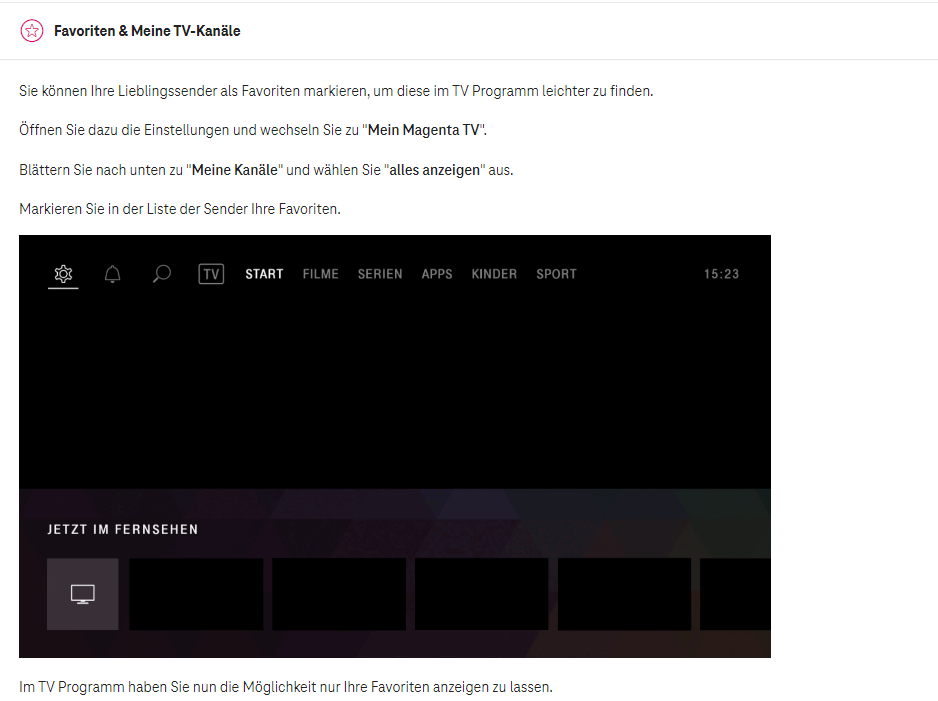

Auf meiner horizon hd Box ist seit heute auf einmal der Sender oe24 HD verschwunden.
War immer auf nr. Sendeplatz 216 .... jetzt ist da auf einmal puls4 hd obwohl es den Sender schon auf einen anderen Platz gibt.
Es gibt zwar oe24 noch auf Platz 128 aber nicht in hd .
Ist der Sender auf hd gestrichen worden oder nur ein Fehler seit dem Update???
Wenn nein wie komme ich zu den wieder ?
Danke für die hilfe
Servus @Coma , und Willkommen in der User helfen User Community.
Laut Senderliste vom August 2022 sollte der Senderplatz von oe24 HD immer noch 216 sein.
Frage aber mal bei der Technikline 0676 200 7777 an, ob da zwischenzeitlich eine Verschiebung stattgefunden hat.
Hier mal die Aktuelle Senderliste der Horizon/HD Box.
Bearbeitet von Rasputin
Hallo, oe24 HD ist nun auf Programmplatz 294 zu finden. LG Karo
Würfelt ihr eigentlich von Magenta, wo welcher Sender landet? Was soll oe24 auf 294? Warum überhaupt der Wechsel?
@Klee ,
ich denke nicht, dass hier gewürfelt wurde. Vermutlich mussten die Kanalplätze aus lizenzrechtlichen Gründen geändert werden. Du kannst den TV Sender bestimmt zu deinen Favoriten hinzufügen und diese nach deinem Geschmack sortieren -> https://www.magenta.at/tv/tv-faq .

LG JD.
Am 14.3.2023 um 11:49 schrieb Karo:Hallo, oe24 HD ist nun auf Programmplatz 294 zu finden. LG Karo
Danke für die Info